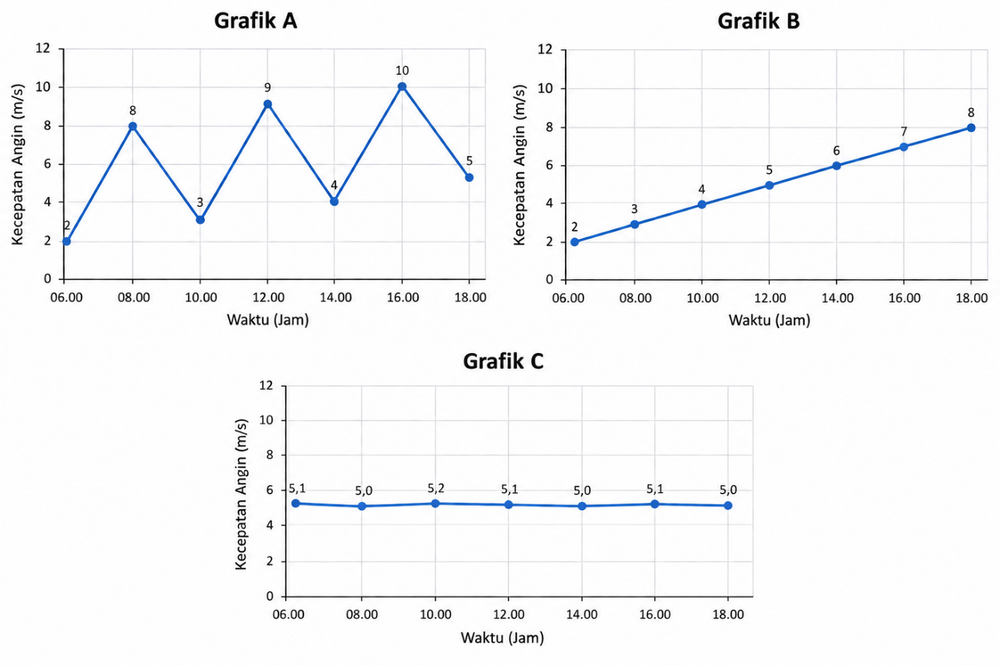

Tipe Soal: Essay Jumlah Soal: 6 Alokasi Waktu: 20 menit
Selama mengerjakan, tetap berada pada halaman tes.
Perpindahan tab/jendela dan keluar dari mode layar penuh akan dicatat sebagai pelanggaran.
Soal 1 dari 6
1.
Sebuah desa berada di daerah perbukitan. Pada siang hari, daerah tersebut mendapat sinar matahari cukup kuat. Namun, kebutuhan listrik terbesar terjadi pada malam hari karena digunakan untuk penerangan rumah, pompa air, dan kegiatan warga. Desa juga memiliki sungai dengan aliran yang cukup deras sepanjang tahun.
Berdasarkan kondisi tersebut, sumber energi terbarukan apa yang paling berpotensi dimanfaatkan untuk memenuhi kebutuhan listrik desa? Jelaskan bagaimana sumber energi tersebut dapat diubah menjadi energi listrik dan alasan mengapa sumber tersebut sesuai dengan kondisi desa.
2.
Perhatikan ketiga grafik berikut! Ketiga grafik tersebut menunjukkan hubungan antara waktu dan kecepatan angin yang ada pada tiga daerah yang berbeda. Setiap daerah memiliki karakteristik kondisi angin yang berbeda sehingga pola hubungan waktu terhadap kecepatan angin yang dihasilkan juga berbeda.
Berdasarkan ketiga grafik tersebut, daerah manakah yang paling sesuai untuk Pembangunan PLTB (Pembangkit Listrik Tenaga Bayu)? Pilih salah satu daerah dan jelaskan alasanmu!

3.
Sebuah kelompok siswa ingin mengetahui pengaruh jumlah sudu turbin air terhadap daya listrik yang dihasilkan. Mereka menguji tiga turbin dengan 3, 5, dan 7 sudu/bilah. Namun, setiap turbin diuji menggunakan debit air yang berbeda, yakni 3 sudu diuji menggunakan debit air 2 L/s, turbin 5 sudu menggunakan debit 3 L/s, dan turbin 7 sudu menggunakan debit 4 L/s. Hasil percobaan menunjukkan turbin dengan 7 sudu yang menghasilkan daya terbesar. Berdasarkan hasil tersebut, kelompok menyimpulkan bahwa semakin banyak jumlah sudu, maka semakin besar daya listrik yang dihasilkan.
Evaluasilah apakah kesimpulan kelompok tersebut sudah dapat dipercaya atau tidak. Jelaskan alasanmu berdasarkan rancangan percobaan, kemudian rancanglah perbaikan percobaan yang lebih tepat untuk mengetahui pengaruh jumlah sudu terhadap daya listrik. Jelaskan variabel yang harus diubah, yang harus dibuat tetap, dan data yang perlu diukur.
4.
Pengelola sebuah taman edukasi ingin mengurangi penggunaan listrik pada sore hingga malam hari. Mereka mencatat penggunaan tiga peralatan selama satu hari.
• Lampu taman: daya 40 W, digunakan 8 jam.
• Kipas: daya 80 W, digunakan 4 jam.
• Pompa air: daya 200 W, digunakan 2 jam.
Berdasarkan data tersebut, hitung energi listrik yang digunakan oleh masing-masing peralatan dalam satu hari. Peralatan mana yang menggunakan energi listrik paling besar? Jelaskan mengapa peralatan dengan daya paling besar belum tentu menjadi peralatan yang menggunakan energi paling banyak.
5.
James ingin mengetahui pengaruh luas panel surya terhadap daya listrik yang dihasilkan. Ia memiliki tiga panel surya berukuran 0,5 m², 1 m², dan 1,5 m², sebuah wattmeter, multimeter, kabel, dan penyangga panel. James menguji ketiga panel pada hari yang sama, tetapi panel 0,5 m² diuji pukul 08.00, panel 1 m² pukul 12.00, dan panel 1,5 m² pukul 15.00. Hasil pengukuran menunjukkan panel 1,5 m² menghasilkan daya paling besar. James kemudian menyimpulkan bahwa semakin besar luas panel, semakin besar daya listrik yang dihasilkan.
Jika kamu diminta memperbaiki percobaan James, bagaimana rancangan pengujian yang akan kamu lakukan agar pengaruh luas panel terhadap daya listrik dapat diketahui dengan lebih adil? Jelaskan variable yang harus dibuat tetap dan variabel yang harus diubah dan cara pengambilan datanya. Setelah itu, evaluasilah apakah kesimpulan James sudah dapat dianggap kuat, jelaskan alasanmu!
6.
SMA Nusa Bangsa mencatat kebutuhan dan kondisi sumber energi berikut selama satu hari.
Waktu
Kebutuhan listrik (kWh)
Intensitas matahari
Pagi (07.00-10.00)
4
Tinggi
Siang (10.00-15.00)
8
Sangat tinggi
Sore (15.00-18.00)
5
Menurun, angin cukup kuat
Malam (18.00-21.00)
7
Tidak ada cahaya matahari, angin masih tersedia
Berdasarkan data tersebut, ubahlah informasi pada tabel menjadi rekomendasi sederhana mengenai pemnafaatan sumber energi yang dapat digunakan di sekolah. Jelaskan alasanmu berdasarkan pola kebutuhan listrik dan ketersediaan sumber energi sepanjang hari!